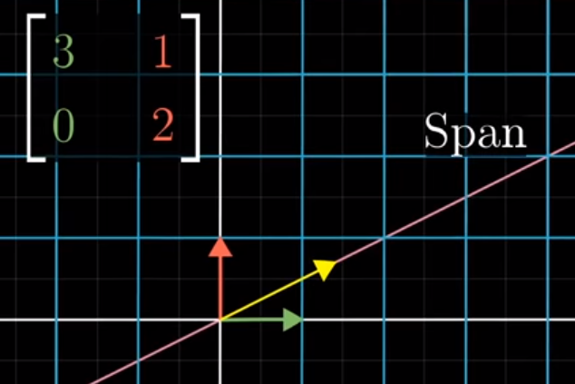
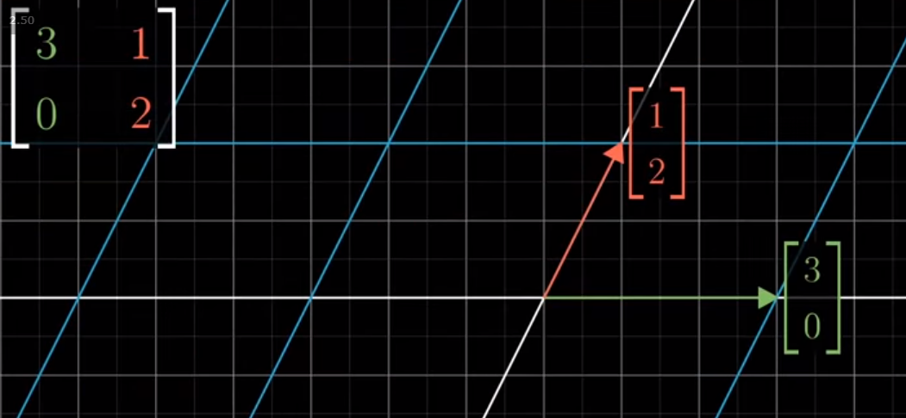
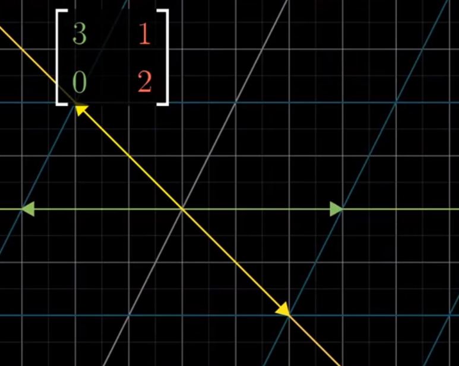
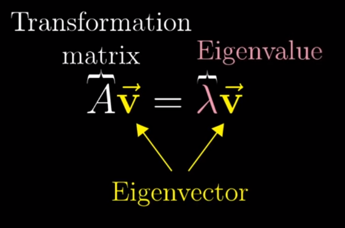
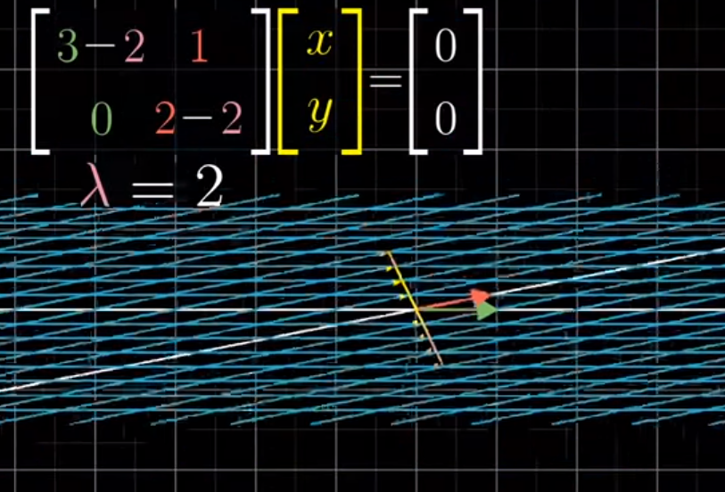
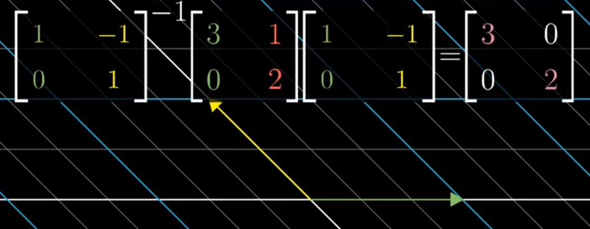

Eigenvectors and Eigenvalues
Motivation
Following along with 3blue1brown’s series on The Essence of Linear Algebra, the topic of Eigenvectors and Eigenvalues shows up nearly last.
When I learned this in undergrad, it was a series of equations and operations that I memorized. However, revisiting to write this notebook, I’ve now got a good intuition for conceptualizing eigenvectors represent, as well as understand their use/role in Linear Algebra.
For starters, he presents a matrix A that represents a simple linear transformation and encourages us to watch the yellow line below.
from IPython.display import Image
Image('images/knocked_off_span_before.PNG')
After the transformation, our basis vectors i and j move, per usual, per the definition of the A. However, holding the pink line constant (uneffected by the transformation) the yellow line gets “knocked off.”
Interestingly, the green line representing i still perfectly overlaps with the white line that went through the transformation.
Image('images/knocked_off_span_after.PNG')
Moreover, there was actually a span that was originally on the line y=-x where the yellow arrow remains on the line.
Image('images/remain_on_span.PNG')
In fact, for all hypothetical lines in our original basis space, the only vectors that remain on their original lines after the transformation A are those on the green and yellow lines.
These are called our eigenvectors and the points that fall on the lines before the transformations are moved along them (think of them as sorts of axes), by a factor shown below– our eigenvalues
Image('images/remain_on_span_both.PNG')
More broadly, can state that the eigenvectors of a Linear Transformation A are the vectors that “stay put” when undergoing the transformation, though, possibly scaling toward or away from the origin by some factor, their eigenvalues.
Interpretation
Looking at this from a 3D perspective, he shows what happens when you’ve got a flat cube, then impose some Linear Transformation that rotates the cube in space.
The axis of rotation clearly isn’t some clear-cut yellow line representing an axis below, but instead some 3-dimensional vector, represented by the pink line.
If you were to calculate the eigenvector of that 3x3 matrix, A, you’d find the pink line below, as it doesn’t move. You’d also find that it had a corresponding eigenvalue of 1, as the line doesn’t undergo any stretching or shrinking whatsoever.
Image('images/eigen_rotation.PNG')
Considering Transformations
Up to this point in his series, we’ve always considered the matrix of a linear transformation, A, in terms its columns, and thereby where it sends our basis unit vectors i and j.
Image('images/2d_before.PNG')
However another way to consider this transformation is via its eigenvectors.
For example, if we found and plotted our eigenvectors (as below), we give ourselves an excellent orientation to understand the transformation. Instead of trying to grok the essence of transformation relative to our starting vectors, we can think of establishing a skeleton that stays structurally sound, and compressing/stretching the skeleton appropriately– all other points transform as a byproduct.
Image('images/2d_after.PNG')
This video does an excellent job painting that “plot the eigenvectors and then do the transformation” intuition, but in 3D.
Symbolically
Though I didn’t recall why it was important, the following equation for calculating eigenvalues/eienvectors was drilled in my head, even years later.
Image('images/eigen_symbol.PNG')
With a bit of algebra, we can follow this equivalence to a neater equation that we can then solve.
Image('images/eigen_symbol_equiv.PNG')
And by the formula of the determinant, we can put a strong algebra emphasis on our Linear Algebra, when finding lambda values with which this holds true.
Image('images/eigen_det.PNG')
Substituting, we arrive at a series of (x, y) values that form our eigenvector.
Recall from our notebook on Null Spaces, that having a determinant equal to 0 means that it drops in dimensions.
Image('images/eigen_det_line_before.PNG')
Indeed, if we plot this eigenvector in yellow and apply the transformation, while every point in 2D shrinks to the line, all points in yellow sink to the origin.
Image('images/eigen_det_line_after.PNG')
Eigen Basis
Now, what if the basis that defined our orientation was our eigen vectors?
Trivially, this is absolutely the case for a diagonal matrix.
1 0 0 0
0 4 0 0
0 0 6 0
0 0 0 2
It’s not hard to see that adding in the - lambda term to each element on the diag and setting equal to zero would reveal the eigenvalues to be just values on the diag. Similarly that the columns of this matrix are the corresponding eigenvectors.
This has the convenient property that taking arbitrarily-many powers of this matrix involves only 4 calculations– exponentiating on the diag (the zeros drop out everywhere else)
Diagonalization
An awesome result of “eigenvectors of a transformation only expand and contract along the same lines” is that doing a change of basis to our transformation, A, to a space defined by eigenvectors will, by definition, give us a diagonal matrix.
Image('images/eigen_change_of_basis_before.PNG')
As seen below, then we can use this diagonal matrix to cleanly move along our new basis vectors in the transformation.
Image('images/eigen_change_of_basis_after.PNG')
Moreover, if we want to do multiple runs of this same linear transformation, changing our basis to accomodate this diagonal matrix lets us do this trivially.
To see why, consider the following bit of algebra:
If A is our original matrix , D is our diagonal, and P is the matrix that takes us from A to D, then the image above reads
P^-1 A P = D
Left multiplying by P negates the inverse and right multiplying by the inverse negates P, so this is equivalently
A = P A P^-1
And so if we want to take A to the nth power, that’s the same as writing
Image('images/eig_vec_to_n.PNG')
Where all of the inside P and inverse terms cancel out, giving us D multiplied by itself n times.
This neat little trick, courtesy of this video.
An Example
Putting actual numbers to this idea, 3b1b adds this slide to the end of his video on eigenvectors as an exercise.
Image('images/eigen_exercise.PNG')
First, let’s load up the numpy that we’ll need
import numpy as np
import numpy.linalg as LAThen, following the form we outlined in our Change of Basis notebook, we’ll call the main matrix M
M = np.array([[0, 1], [1, 1]])Going to calculate these using numpy as opposed to by hand, but with nonzero terms in each cell, you can easily imagine how tedious this would be to do again and again.
LA.matrix_power(M, 2)array([[1, 1],
[1, 2]])
LA.matrix_power(M, 3)array([[1, 2],
[2, 3]])
LA.matrix_power(M, 4)array([[2, 3],
[3, 5]])
LA.matrix_power(M, 5)array([[3, 5],
[5, 8]])
You might notice that this clever little matrix actually represents the Fibonacci Sequence, going from the upper-left to bottom-right.
Fast-forwarding a few terms, this gets pretty big.
LA.matrix_power(M, 15)array([[377, 610],
[610, 987]])